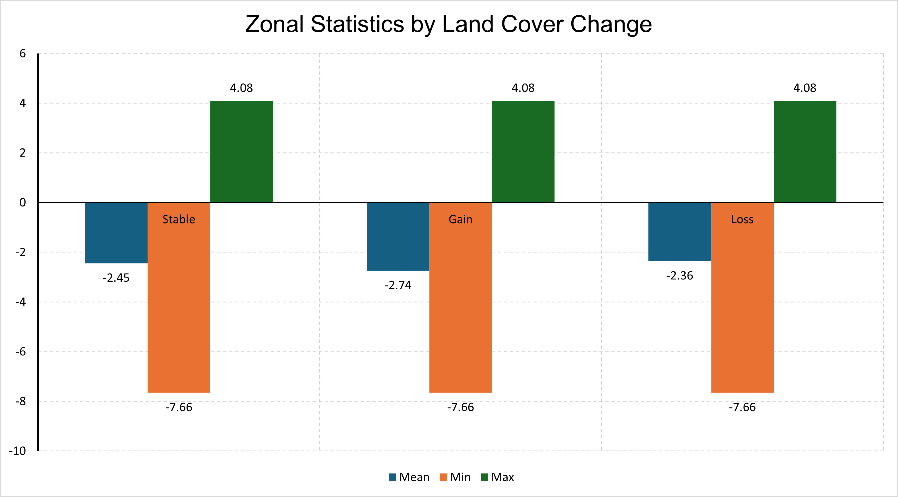
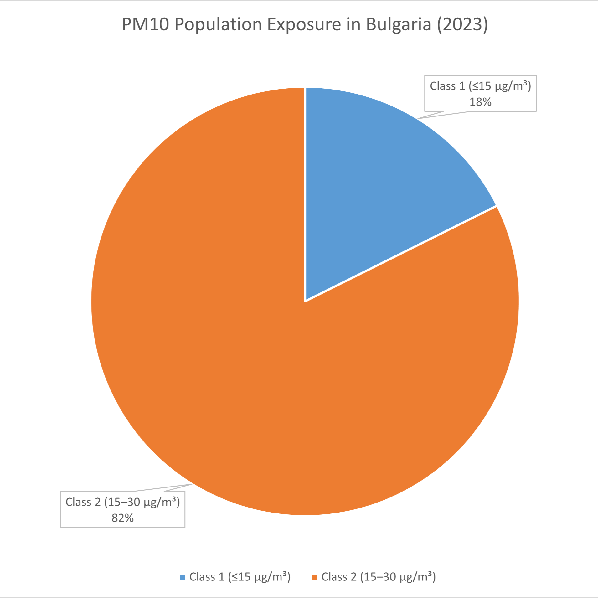

Three-Level Web Map Structure
The largest categories are NO2, PM2.5, and PM10. Each pollutant section contains three thematic map views: pollution, land cover, and population.
GIS Lab 2026 web preview for NO2, PM2.5, and PM10 layers.
Each pollutant is organized into pollution, land cover, and population map views.
The largest categories are NO2, PM2.5, and PM10. Each pollutant section contains three thematic map views: pollution, land cover, and population.
Three GeoServer map placeholders for the NO2 workflow. Choose OSM or satellite as the basemap for each map.
GeoServer WMS layer placeholder: your_workspace:no2_pollution
GeoServer WMS layer placeholder: your_workspace:no2_landcover
GeoServer WMS layer placeholder: your_workspace:no2_population
Three GeoServer map placeholders for the PM2.5 workflow. Choose OSM or satellite as the basemap for each map.
GeoServer WMS layer placeholder: your_workspace:pm25_pollution
GeoServer WMS layer placeholder: your_workspace:pm25_landcover
GeoServer WMS layer placeholder: your_workspace:pm25_population
Three GeoServer map placeholders for the PM10 workflow. Supporting chart and table outputs are shown under their corresponding thematic content.
GeoServer WMS layer placeholder: your_workspace:pm10_pollution
GeoServer WMS layer placeholder: your_workspace:pm10_landcover

| Indicator | Value | Category |
|---|---|---|
| stability(persistence) | 0.9493 | N/A (Baseline) |
| Primary source of gain | 0.6216 | Rangeland (code11) |
| Secondary source of gain | 0.3295 | Crops (code5) |
| Third source of gain | 0.0333 | Built (code7) |
| Primary source of destination | 0.8436 | Rangeland (code11) |
| Secondary source of destination | 0.1288 | Crops (code5) |
| Third source of destination | 0.0184 | Built (code7) |
| Value | Pixel count | Area (deg2) |
|---|---|---|
| 102 | 288,236 | 0.002877 |
| 201 | 173,703 | 0.001734 |
| 202 | 500,526,878 | 4.996822 |
| 204 | 50,773 | 0.000507 |
| 205 | 3,442,142 | 0.034363 |
| 207 | 491,578 | 0.004907 |
| 209 | 22,620 | 0.000226 |
| 211 | 22,545,230 | 0.225072 |
| 502 | 6,558,426 | 0.065474 |
| 1102 | 12,370,715 | 0.123498 |
GeoServer WMS layer placeholder: your_workspace:pm10_population

Each map card is prepared for a GeoServer WMS overlay. Fill in the map container's data-geoserver-url and replace the placeholder data-layer value when the final layers are ready.
| Level 01 | Level 03 map views | Display method |
|---|---|---|
| NO2 | Pollution / Land Cover / Population | GeoServer WMS placeholders |
| PM2.5 | Pollution / Land Cover / Population | GeoServer WMS placeholders |
| PM10 | Pollution / Land Cover / Population | GeoServer WMS placeholders with chart and table outputs |